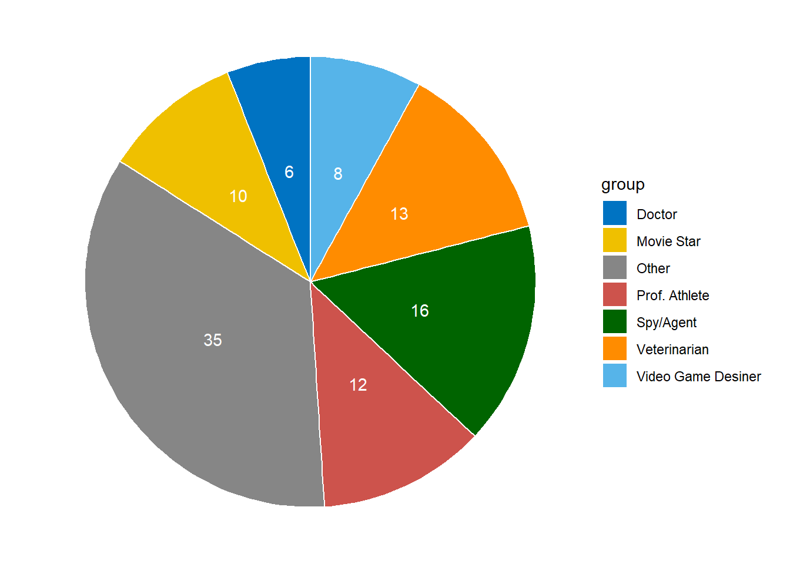
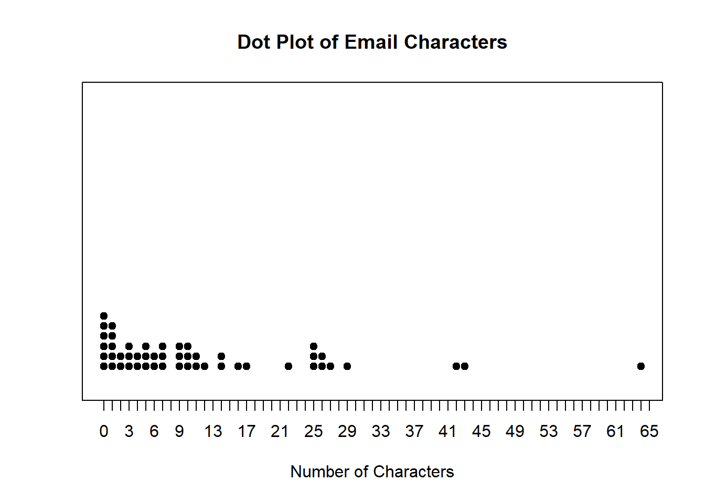
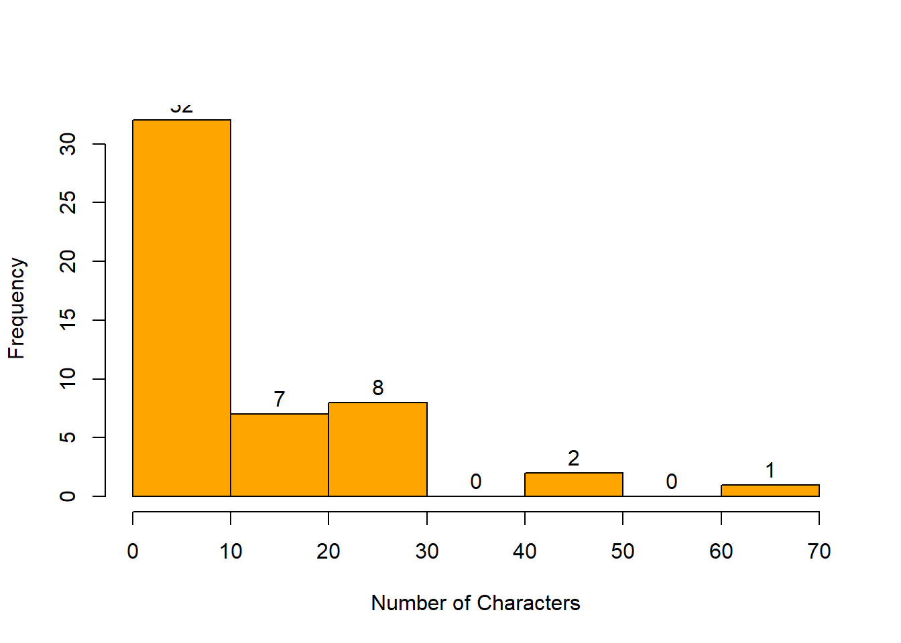
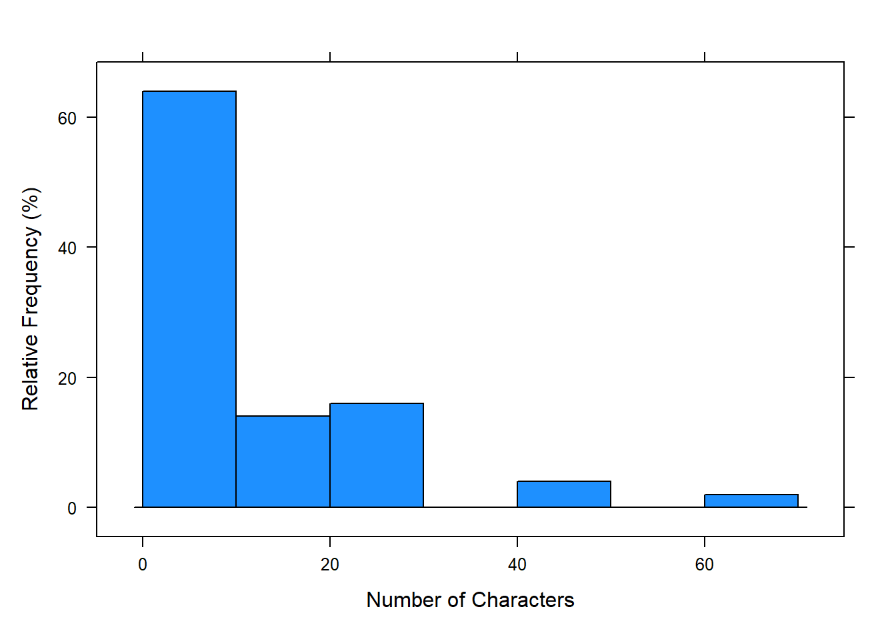
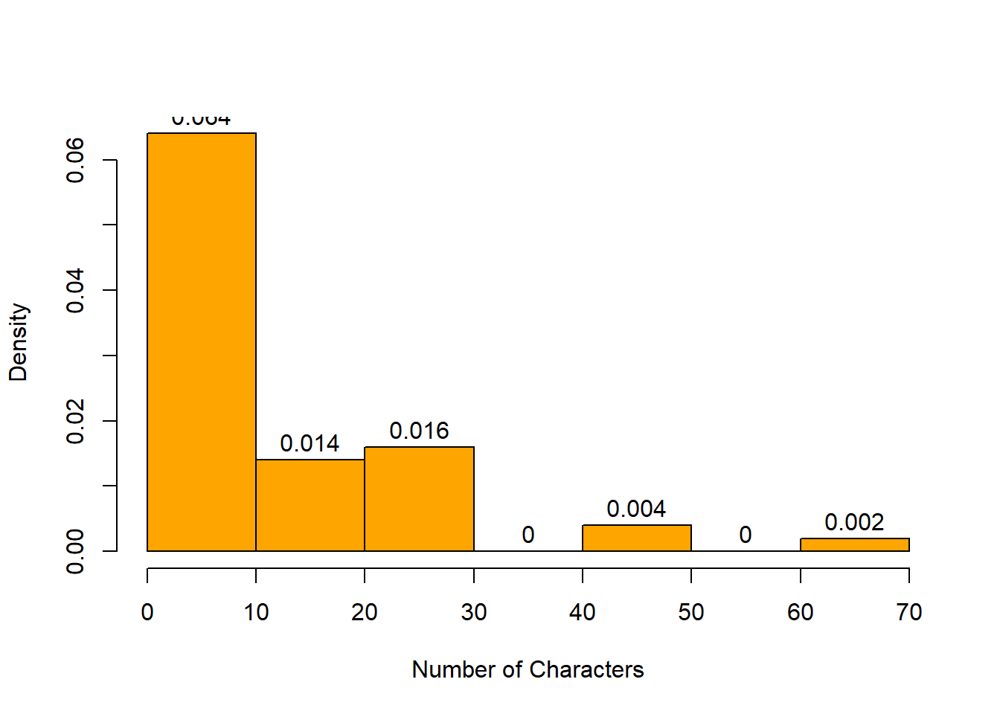
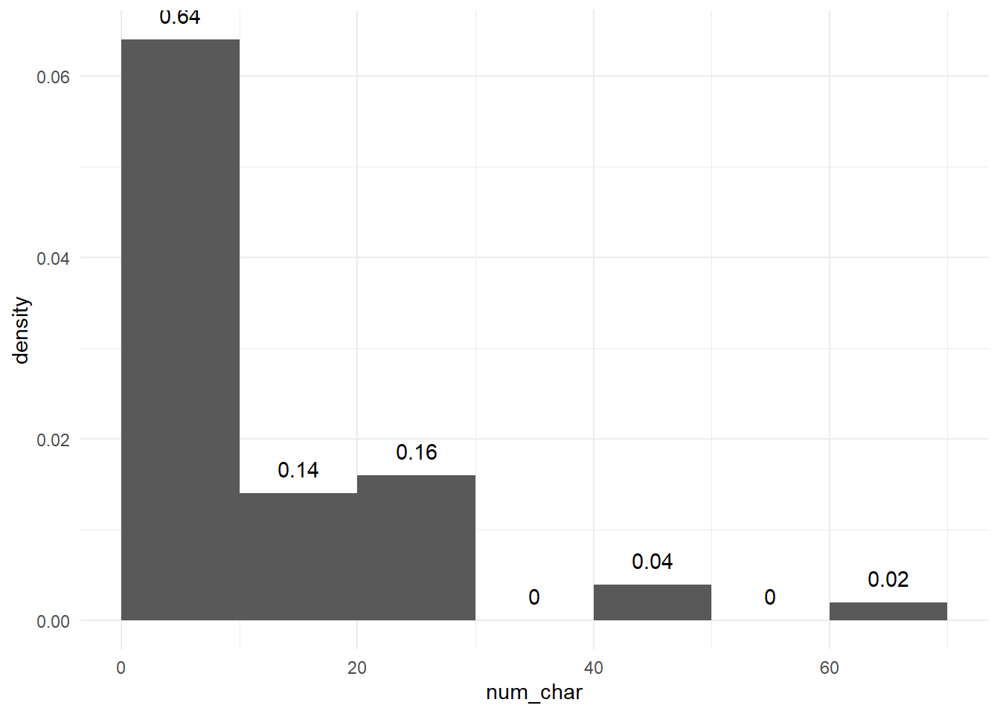
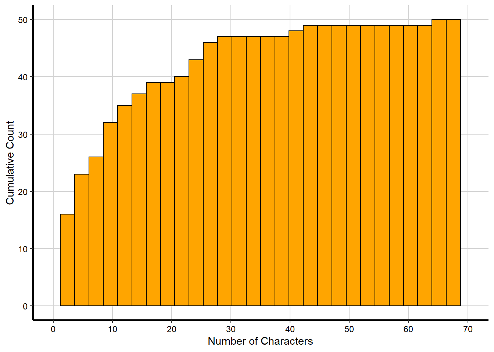
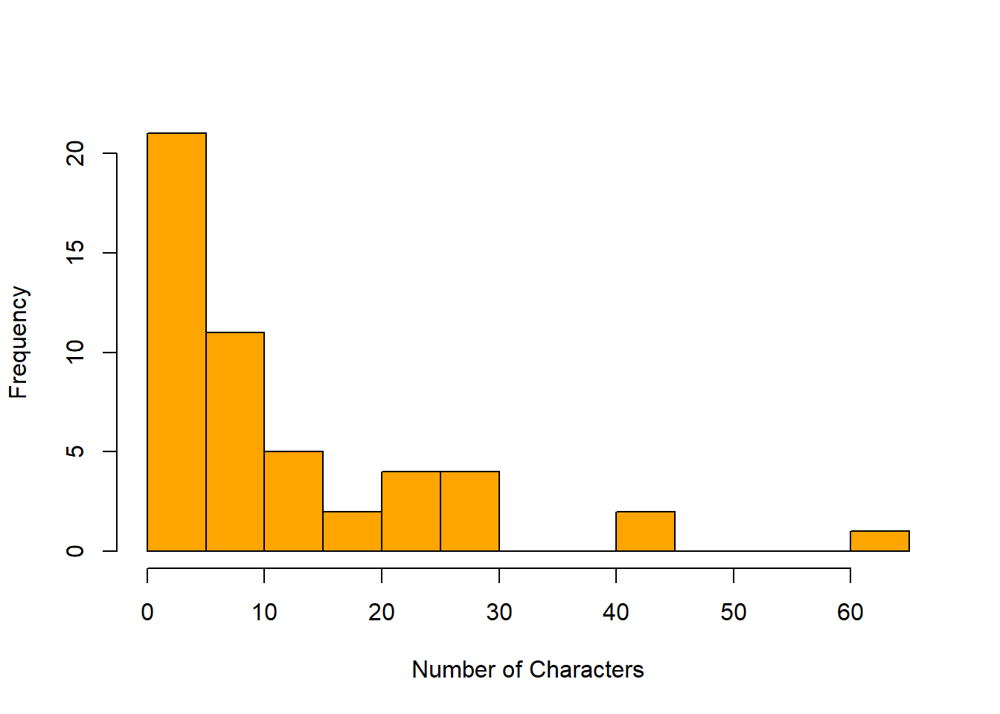

Chapter 3 Graphical and Tabular Displays of Data
Learning Outcome:
| Calculate measures of central tendency, position, and spread, including standard deviation. |
In this chapter, we will describe the data by displaying it in graphical and tabular forms. We will summarize it with proportions. We will explore the meaning of distribution and investigate its shape, center, and spread. We will also learn how to identify unusual observations and analyze their influence on the distribution.
3.1 Descriptive Statistics
Goal: to organize and summarize information contained in a variable or multiple variables
– Graphical Description
– Numerical Summaries
Univariate Analysis: descriptions and summaries of a single variable, e.g., income
Bivariate Analysis: analysis of relation between two variables, e.g., income and level of education
Multivariate Analysis: analysis of relation among more than two variables, e.g., income, level of education, and gender
3.2 Univariate Categorical Variable
Survey of Zoo Animals
orangutans giraffe orangutans orangutans monkeys giraffe
monkeys giraffe orangutans giraffe monkeys orangutans
monkeys giraffe orangutans monkeys giraffe monkeys
giraffe monkeys monkeys orangutans giraffe giraffe
monkeys monkeys orangutans orangutans giraffe monkeys
giraffe monkeys orangutans orangutans giraffe orangutans
monkeys monkeys monkeys monkeys monkeys orangutans
monkeys monkeys orangutans giraffe monkeys giraffe
giraffe monkeys monkeys giraffe giraffe orangutans
giraffe monkeys monkeys monkeys giraffe giraffeA frequency distribution (or frequency table) shows how data are partitioned among several categories (or classes) by listing the categories along with the number (frequency) of data values in each of them.
A Relative Frequency Distribution is a variation of the basic frequency distribution in which each class frequency is replaced by a relative frequency.
\[ \text{relative frequency of a class} = \frac{\text{frequency of a class}}{\text{sum of all frequencies}} \]
\[ \bbox[yellow,5px] { \color{black} { \begin{array}{c|c|c} \text{Animal} & \text{Frequency} & \text{Relative Frequency} \\ \hline \text{giraffes} & \text{20} & 33\% \\ \text{orangutans} & \text{15} & 25\% \\ \text{monkeys} & \text{25} & 42\% \end{array} } } \]
Displaying Frequency Distribution: Bar Chart
Displaying Relative Frequency Distribution: Bar Chart
Pie Charts
The distribution of a categorical variable can be described by a pie chart, which is a disk where slices represent the categories. The proportion of the total area for one slice is equal to the relative frequency for the category represented by the slice. The relative frequencies are usually written as percentages.
Example 1: Construct and Interpret a Pie Chart
A total of 273 children were surveyed about what job they would want to do. The jobs and the percentages of the children who voted for them are shown in the table.
\[ \bbox[yellow,5px] { \color{black} { \begin{array}{r|c} \text{Job} & \text{Percent} \\ \hline \text{Spy/Agent} & 16 \\ \text{Veterinarian} & 13 \\ \text{Professional Athlete} & 12 \\ \text{Movie Star} & 10 \\ \text{Video Game Designer} & 8 \\ \text{Doctor} & 6 \\ \text{Other} & 35 \end{array} } } \]

Questions:
Find the proportion of the observations that fall in the spy category.
Find the proportion of the observations that do NOT fall in the spy category.
Find the proportion of the observations that fall in the athlete category OR fall in the movie-star category.
3.3 Interpreting a Multiple Bar Graph
In a survey in 2012, 1960 adults were asked the following question: “Generally speaking, do you usually think of yourself as a Republican, Democrat, Independent, or other?” The results of the survey are described by the multiple bar graph.
What proportion of women thought of themselves as Democrats?
Which political party did the greatest proportion of men choose?
Compare the proportion of women who thought of themselves as Independents to the proportion of men who thought of themselves as Independents.
A total of 1081 women and 879 men responded to the survey. Were there more women or men who thought of themselves as Independents? How is this possible, given there was a smaller proportion of women who thought of themselves as Independents than men?
Example: Using a Two-Way (Contingency) Table to Find Proportions
The table summarizes the responses from all 42 students who participated in the survey about whether they had read a novel in the past year.
\[ \bbox[yellow,5px] { \color{black} { \begin{array}{l|c|c|c} \text{Gender} & \text{Did Not Read Novel} & \text{Read Novel} & \text{Total} \\ \hline \text{Female} & 6 & 19 & 25 \\ \text{Male} & 6 & 11 & 17 \\ \hline \text{Total} & 12 & 30 & 42 \\ \hline \end{array} } } \]
- How many of the students read a novel in the past year?
- What proportion of the students did not read a novel in the past year?
- What proportion of the women read a novel in the past year?
- What proportion of the students is men AND read a novel in the past year?
3.4 Univariate Continuous Variable
Email Data
Frequency distribution of number of characters in \(50\) email messages.
0 0 0 0 0 0 1 1 1 1
1 2 2 3 3 3 4 4 5 5
5 6 6 7 7 7 9 9 9 10
10 10 11 11 12 14 14 16 17 22
25 25 25 26 26 27 29 42 43 64A cumulative frequency distribution is a variation of basic frequency distribution in which each class is the sum of the frequencies for that class and all previous classes.
| char_num | freq | cumFreq | relative |
|---|---|---|---|
| 0 | 6 | 6 | 0.12 |
| 1 | 5 | 11 | 0.10 |
| 2 | 2 | 13 | 0.04 |
| 3 | 3 | 16 | 0.06 |
| 4 | 2 | 18 | 0.04 |
| 5 | 3 | 21 | 0.06 |
| 6 | 2 | 23 | 0.04 |
| 7 | 3 | 26 | 0.06 |
| 9 | 3 | 29 | 0.06 |
| 10 | 3 | 32 | 0.06 |
| 11 | 2 | 34 | 0.04 |
| 12 | 1 | 35 | 0.02 |
| 14 | 2 | 37 | 0.04 |
| 16 | 1 | 38 | 0.02 |
| 17 | 1 | 39 | 0.02 |
| 22 | 1 | 40 | 0.02 |
| 25 | 3 | 43 | 0.06 |
| 26 | 2 | 45 | 0.04 |
| 27 | 1 | 46 | 0.02 |
| 29 | 1 | 47 | 0.02 |
| 42 | 1 | 48 | 0.02 |
| 43 | 1 | 49 | 0.02 |
| 64 | 1 | 50 | 0.02 |
3.5 Dotplot
A dot plot uses dots to show the frequency, or number of occurrences, of the values in a data set. The higher the stack of dots, the greater the number of occurrences there are of the corresponding value.

Interpreting Dotplot
- What observation occurred the most?
- What observations occured the least?
- How many emails have 25 or more characters?
- Do you see any outliers?
Definitions
The frequency of an observation of a numerical variable is the number of times the observation occurs in the group of data.
The frequency distribution of a numerical variable is the observations together with their frequencies.
An outlier is an observation that is quite a bit smaller or larger than the other observations.
The kth percentile of some data is a value (not necessarily a data value) that is greater than or equal to approximately k% of the observations and is less than approximately (100 - k)% of the observations.
Example: Percentiles
- Find the percentile of 22.
- Find the 25th, 50th, and 75th percentile.
3.6 Stemplots
A stemplot (or stem-and-leaf plot) breaks up each data value into two parts: leaf, which is the rightmost digit, and the stem, which is the other digits.
0 0 0 0 0 0 1 1 1 1
1 2 2 3 3 3 4 4 5 5
5 6 6 7 7 7 9 9 9 10
10 10 11 11 12 14 14 16 17 22
25 25 25 26 26 27 29 42 43 64
The decimal point is 1 digit(s) to the right of the |
0 | 00000011111223334455566777999
1 | 0001124467
2 | 25556679
3 |
4 | 23
5 |
6 | 43.7 Histogram
A histogram is a graph consisting of bars of equal width drawn adjacent to each other. The horizontal scale represents classes of quantitative data values; and the vertical scale represents frequencies.

Histogram | Relative Frequency
The horizontal scale represents classes of quantitative data values; and the vertical scale represents relative frequencies.

Histogram | \(\textbf{Density} = \dfrac{\textbf{relative frequency}}{\textbf{bin width}}\)
In density histogram, area of each rectangular bar is the relative frequency of its class.
\[ \begin{align} \text {Density of class (10-20)} &= \dfrac{\text{rel. freq of class (10-20)}}{\text{class width}} \\ &= \dfrac{7/20}{10} \\ &= 0.014 \end{align} \]

Histogram | Calculation of Percentiles

\(\textbf{1. Estimate the percentile of the number of characters 20.}\)
In the density histogram, the percentile of any data point can be measured by summing the relative frequencies of all classes on the left of that data point.
In this case, the percentile of the number 20 is \(0.14 + 0.64 = 0.78\)
\(\textbf{2. Identify the class that contains the 75th percentile.}\)
Here, the summing happens in the reverse direction. We calculate the cumulative relative frequency starting from class \(text{0-10}\) until we reach the desired percentile. We find that the class \(10-20\) contains the \(75\)th percentile since the cumulative relative frequency up to that class is \(text{0.78}\).
Cumulative Frequency Histogram

For more examples, click here.
Exercise - Construct a Density Histogram
The accompanying frequency distribution summarizes data on the number of times smokers attempted to quit before their final successful attempts.
\[ \bbox[yellow,5px] { \color{black} { \begin{array}{r|c} \text{Number of attempts} & \text{Frequency} \\ \hline \textbf{0-10} & 778 \\ \textbf{10-20} & 306 \\ \textbf{20-30} & 274 \\ \textbf{30-40} & 221 \\ \textbf{40-50} & 238 \end{array} } } \]
An Outlier is a data value that is far above or far below the rest of the data values.
